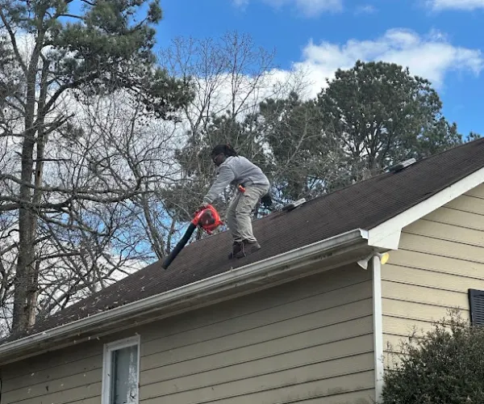

About Gutter Cleaning Cartersville GA
We're a gutter cleaning company serving Cartersville, GA. Here's how we work, and why we do it the way we do.

Our Approach
Most companies that clean gutters also do windows, pressure washing, or roofing. We don't. Gutter Cleaning Cartersville does one thing, and that focus is the whole point, we're not learning gutters as a side job, it's the only job.

How We Work
We check the pitch, not just the trough. We clear the downspouts, since a blocked one backs up water even after a clean gutter. Debris gets hauled away, not left on your lawn. Before we leave, we test the flow, so you know it works, not just that it looks clean.
What Makes Us Different
We focus entirely on gutters and downspouts to give you specialized, high-quality care that generalists can't match.
Gutters Only, Not a Generalist
We work on gutters and downspouts. That's it. No windows, no pressure washing, no roofing added on the side. The person on your roofline has spent real time learning how debris settles at a bend versus how it packs into a trough, not splitting attention across five different services.
You Talk to the Person Doing the Work
No call center, no lead service passing your job to a stranger. You call, and you reach the crew that actually shows up. If something comes up during the job, you ask directly, not through a scheduling app or a support line relaying messages back and forth.
We Check the Pitch, Not Just the Trough
A gutter can look clear and still drain wrong if the pitch is off. We check for that, not just scoop out what's visible. We clear the downspouts too, since a blocked one backs up water even after the trough itself is spotless, and we test the flow before calling the job done.
We Know Why Your Home Clogs Differently
Older homes near downtown clog from tree canopy overhead. Newer homes toward Emerson clog from undersized, builder-grade gutters. We check for the one that actually fits your house, not a generic pass that treats every roofline the same way.

Serving Cartersville
We've worked across Cartersville for five years, from the older streets near downtown to the newer builds toward Emerson. Twice a year is the standard, once in spring, once in fall, and that's the schedule we follow here.

Why It's Worth Doing Right
A clogged gutter doesn't fail quietly. Water spills over the edge, pools near the foundation, and soaks into the soil. The U.S. Department of Energy's Building America program confirms that keeping this water moving away from a home is one of the most basic, effective ways to protect its foundation. Left alone, this turns into rot, cracked foundations, and repair bills far higher than a cleaning would ever cost. We're licensed and insured.
Call us for a free estimate.